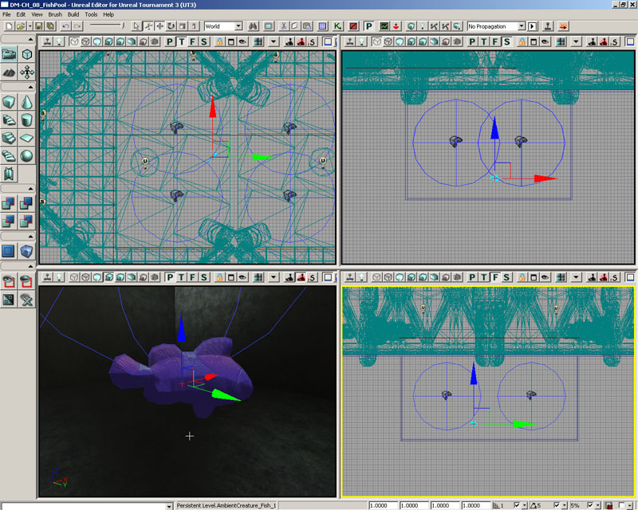
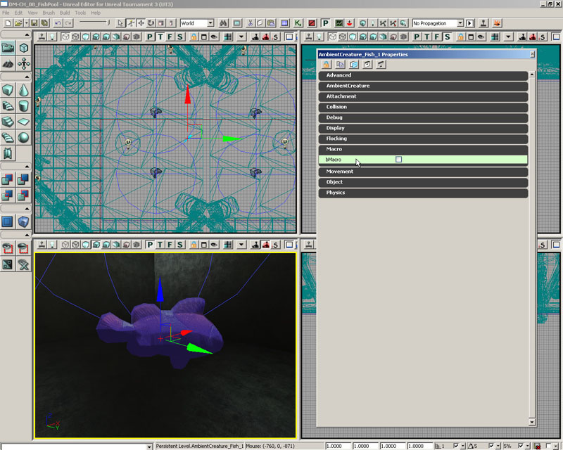

UDN
Search public documentation:
MasteringUnrealScriptPreProcessor
日本語訳
中国翻译
한국어
Interested in the Unreal Engine?
Visit the Unreal Technology site.
Looking for jobs and company info?
Check out the Epic games site.
Questions about support via UDN?
Contact the UDN Staff
中国翻译
한국어
Interested in the Unreal Engine?
Visit the Unreal Technology site.
Looking for jobs and company info?
Check out the Epic games site.
Questions about support via UDN?
Contact the UDN Staff
- CHAPTER 9 – UNREALSCRIPT PREPROCESSOR
- 9.1 OVERVIEW
- 9.2 MACRO BASICS
- TUTORIAL 9.1 – YOUR FIRST MACRO
- 9.3 MACROS WITH PARAMETERS
- TUTORIAL 9.2 – MACRO PARAMETERS
- 9.4 BUILT-IN MACROS
- TUTORIAL 9.3 – USING AN INCLUDE FILE
- 9.5 COMMAND-LINE SWITCHES
- TUTORIAL 9.4 – VISUAL DEBUG MODE, PART I: SETTING UP INCLUDE FILE
- TUTORIAL 9.5 – VISUAL DEBUG MODE, PART II: CONDITIONAL INCLUDE STATEMENT
- TUTORIAL 9.6 – VISUAL DEBUG MODE, PART III: GLOBAL BSHOWDEBUG AND CREATURE VARIABLE INITIALIZATION
- TUTORIAL 9.7 - VISUAL DEBUG MODE, PART IV: HIDING MESHES
- TUTORIAL 9.8 - VISUAL DEBUG MODE, PART V: DRAWING LEADER INDICATORS
- TUTORIAL 9.9 - VISUAL DEBUG MODE, PART VI: FLOCK VISUAL INDICATORS
- TUTORIAL 9.10 - VISUAL DEBUG MODE, PART VII: TESTING
- 9.5 SUMMARY
- SUPPLEMENTAL FILES
CHAPTER 9 – UNREALSCRIPT PREPROCESSOR
One of the new editions to Unreal Engine 3 is the UnrealScript preprocessor. If you are familiar with the preprocessor in C++ then you’ll likely become quite comfortable with UnrealScript’s new preprocessor. If you have no clue what a preprocessor is, then don’t worry; we’ll be covering all of the details shortly.9.1 OVERVIEW
In its simplest form a preprocessor is little more than a glorified replacement tool that alters text. A preprocessor is used to replace text, referred to as a macro, with other text within your source files. It is also used to include certain code within a file based on particular compiler directives; this is known as conditional compilation and it very useful when code has to be written differently on multiple platforms. It is very important to remember that the preprocessor is invoked before any of the compilation of the scripts happens.9.2 MACRO BASICS
In order to actually use a macro within our scripts we must define some macro and to do that we use the built in macro define. We’ll talk in depth about the built-in macros shortly, but the basic definition of a macro looks like this:`define MyFirstMacro “This is really my first macro.”If we take a look you’ll notice that the macro starts with a ` (a back tick) followed by some whitespace (this can be a tab, a space, or any combination of those characters). Next is the name of the macro. This is what we will use when we refer to it later in our scripts. Notice that the name of the macro must not contain any spaces. Finally is the definition of the macro body. This body definition is optional. You can define a macro with no body. Such a macro could be used for replacement purposes in certain circumstances, but it can also be quite useful when used in a preprocessor If statement. Note: Omitting the body definition of a macro can cause problems within the context of an include file. This will be covered in more depth later in the chapter. We follow the same rules when making use of our macro. If we want to use the macro we made above in a source file we’d type:
`MyFirstMacroThis will expand `MyFirstMacro and replace it with “This is really my first macro.” including the quotes. Alternatively, we can also expand the macro by writing:
`{MyFirstMacro}
This is useful if we want to expand our macro within the body of some other text that doesn’t have conveniently positioned whitespace. Other times we use this format as it provides clarity within our scripts as it is easy to miss the back tick character.
some`{MyFirstMacro}code
The preprocessor turns that into:
some“This is really my first macro.”codeWhen the preprocessor expands macros, it then rescans the expanded text to see if any resultant macros should be expanded. Because of this, you should be very careful how you use this feature as you could end up in an infinite recursive loop of macro expansions. Note the example below:
`define hello This macro will infinitely recurse because of the `hello usage. `hello
TUTORIAL 9.1 – YOUR FIRST MACRO
In this tutorial, you will define a simple macro that will then be used within an existing class to show the basic replacement behavior of a macro. Specifically, a macro will be defined before the class declaration whose body will contain one or more class specifiers. This macro will then be used within the class declaration to add the specifiers defined in the macro to the declaration. 1. Open ConTEXT and the AmbientCreature.uc script. 2. With the cursor at the beginning of the script, press the Enter key a few times to move the entire contents of the class down a few lines. 3. Back on the first line of the script, define a new macro named ClassSpecs.`define ClassSpecsThere is now a macro named ClassSpecs, but it has no body at this point. 4. Leave a space after ClassSpecs and then add the Placeable class specifier so the final definition appears like so:
`define ClassSpecs placeableThis will cause the term placeable to be inserted anywhere the macro is used. 5. Inside the class declaration after the term Actor and before the ; terminator, add a space and then place the ClassSpecs macro to add the specifier to the declaration.
class AmbientCreature extends Actor `{ClassSpecs};
Notice that curly braces were used to ensure the whitespace surrounding the macro is respected. Otherwise, it would be possible that the declaration could end up looking like the following:
class AmbientCreature extends Actorplaceable;6. Compile the scripts and then open UnrealEd. You should now see not only the AmbientCreature class listed in the Actor Browser as a placeable class, but you should also see the AmbientCreature_Fish class listed as it inherits the placeable specifier from the AmbientCreature class. Close UnrealEd.
Figure 9.1 – Both the AmbientCreature and AmbientCreature_Fish classes are placeable. 7. Now, inside the definition of the ClassSpecs macro, add the abstract specifier just before the placeable specifier. The definition should appear as follows:
`define ClassSpecs abstract placeable8. Compile the scripts again and Open UnrealEd up once again. In the Actor Browser, you should still see both classes listed, but this time the AmbientCreature class should be greyed out signifying it is not a placeable class since it has now been declared as abstract. You can see that whatever code is placed in the body of the macro is being inserted in place of the macro in the class declaration.
Figure 9.2 – Only the AmbientCreature_Fish class is placeable now. 9. Save the file with the new macro as we will be using it in the next tutorial.. <<<< End of Tutorial >>>>
9.3 MACROS WITH PARAMETERS
It is also possible to create macro definitions that accept parameters as input. This is essentially like a function, in many cases, but instead of being evaluated it is expanded. Because of this, some types of macros can have better performance that functions that do the same thing. Formally the definition of the macro looks like this:`define <macro_name>[(<param1>[,<param2>...])] [macro_definition]If that definition looks intimidating, no problem, let’s take a look at a few examples. EXAMPLE: CREATING A MACRO TO CUBE A NUMBER The definition of the macro looks like this:
`define Cube(x) `x * `x * `xThis says to create a macro named Cube that takes in one parameter named x. The expansion then expands to x * x * x replacing x with whatever was passed in. Note that when referencing the name of the parameter, you must preface it with a ` (back tick). To use this macro we might do something like this:
var int myVal = `Cube(3);It is very important to note that when invoking the macro the ( (opening parenthesis) must come directly after the name of the macro; no whitespace can be present. EXAMPLE: CREATING A MACRO TO SQUARE THE SUM OF TWO NUMBERS This macro will sum two numbers and then square that result.
`define SumSquare(x, y) (`x + `y) * (`x + `y)In order to use this we do the following:
var int myVal = `SumSquare(5, 3);Like functions, commas are used to separate the parameters. However, unlike functions, macro parameters provide absolutely no type safety. For example, we could do the following and the macro would expand just as it thinks it should:
var int badVal = `SumSquare(p1, p2);The expansion would result in the following:
var int badValue = (p1+ p2) * (p1+ p2);Now, if p1 and p2 were actually defined as some integer variable this would work as expected. However, the preprocessor does not do any of this type of validation thus you could end up with some code that won’t even compile. Note that the Unreal preprocessor likes to eat the whitespace characters between the macro evaluations. If you wanted your output to look like this (note the space after p1):
var int badValue = (p1 + p2) * (p1 + p2);You’d need to surround your macros in the define with {} (curly braces) like this:
`define SumSquare(x, y) (`{x} + `{y}) * (`{x} + `{y})
This doesn’t matter in this particular example, but it could potentially be an issue so please be sure to remember this fact.
TUTORIAL 9.2 – MACRO PARAMETERS
This tutorial will expand on the knowledge gained in the last tutorial to create a new macro making use of parameters. This macro will essentially act as a function that will allow us to declare new variables. 1. Open ConTEXT and the AmbientCreature.uf script containing the changes made in the previous tutorial. 2. Below the ClassSpecs macro definition, define a new macro named NewEditvar with the parameters shown below:`define NewEditVar(varCat,varType,varName)3. Now, we will add the body of the macro. The purpose of this macro is to declare a new editable variable so the body will take the form of a variable declaration using the parameters of the macro. Add the body shon here:
var(`varCat) `{varitype} `{varName}
The full macro definition should now appear as follows:
`define NewEditVar(varCat,varType,varName) var(`varCat) `{varitype} `{varName}
Again, we have used curly braces to make sure spacing stays consistent.
4. Now, we can use this macro to declare a new editable variable in the AmbientCreature class. After the class declaration, declare a new bool variable named bMacro to be located in the Macro category by adding the code below:
`NewEditVar(Macro,Bool,bMacro)5. Compile the scripts and open UnrealEd. The AmbientCreature_Fish class should still be placeable based on the changes made in the previous tutorial. Add an instance of this class to a map by selecting it in the Actor Browser, right-clicking in the viewport, and choosing Add AmbientCreature_Fish Here.
Figure 9.3 – A new AmbientCreature_Fish actors is placed in the map. 6. Double-click the new actor to open the properties window. There should be a Macro category present. Expand this category and you should see the bMacro property listed. The macro was used to insert the proper code to declare a new variable.
Figure 9.4 – The bMacro property was added through the use of a macro. In this case the macro code isn’t really any more efficient than typing the declaration out by hand, but situations may arise in the development of your mod where you find yourself performing repetitive tasks that could be greatly enhanced by making use of a macro in this fashion. 7. Save the file with the new macro and variable declaration intact. These will be used in the next tutorial. <<<< End of Tutorial >>>>
9.4 BUILT-IN MACROS
The UnrealScript preprocessor has some built-in macros defined for us already. This section will go over each of those macros and provides some examples on how to use them.DEFINE
This macro is used to define other macros that we wish to make use of. The named macro will expand to the given definition; if there is no definition provided then it will expand to the empty string. The formal definition is:`define <macro_name>[(<param1>[,<param2>...])] [macro_definition]Remember that when using a named macro with parameters the ( (opening parenthesis) must come directly after the name of the macro and that all parameters are listed as a typeless, comma separated list. There is a special macro for define: `#. This macro represents the number of parameters specified and can only be used within the definition of the macro. For example:
`define MyMacro(p1, p2, p3, p4) “This macro contains `# parameters.” var string myString = `MyMacro(1, 2, 3, 4);The expansion of the above use of MyMacro would be:
var string myString = “This macro contains 4 parameters.”;
IF/ELSE/ENDIF
The if, else, and endif macros are used to support conditional compilation; that is, at compile time, including or excluding certain blocks of code. This is very useful when needing to provide specific implementations for particular platforms. The formal definition is:`if(<value>) `else `endifThe value within the if-clause is evaluated to true if it is expanded to a non-empty string, otherwise it is considered to be false. When the value is evaluated to true, then all of the text between the if and else macros is placed within the file. Otherwise the text between the else and the endif macros will be used. It is good to note that the else macro is an optional piece of the structure; that is, it is valid to only have a block made up of the if and endif macros.
EXAMPLE: USAGE OF IF/ELSE/ENDIF
In this example we will define a macro and include a block of code based on whether or not that macro evaluated to an empty string.`define MyIfCheck “Yes” var int myValue; `if(`MyIfCheck) myValue = 10; `else myValue = 20; `endifOf course, this example would be much more useful if MyIfCheck didn’t always evaluate to “Yes”, but we’ll learn how to do that later through command line options. EXAMPLE: NESTING IF/ELSE/ENDIF MACROS It is sometimes desirable to be able to check for more than one condition. There are a couple of ways in which we can do this; I’ll let you decide which method you prefer. Both methods will assume that one of the following macros is defined to a non-empty string: PC, XBOX360, or PS3. Method 1:
`if(`PC) // The code to execute for the PC would go here `else `if(`XBOX360) // The code to execute for the Xbox 360 would go here `else `if(`PS3) // The code to execute for the PS3 would go here `endifMethod 2:
`if(`PC) // The code to execute for the PC would go here `endif `if(`XBOX360) // The code to execute for the Xbox 360 would go here `endif `if(`PS3) // The code to execute for the PS3 would go here `endifBoth of the methods used above will ensure that only certain blocks of code are executed depending on the platform that is being run, but one is slightly more concise that the other.
INCLUDE
The include macro is used to include the contents of another file at the current location. The include macro looks like this:`include(<filename>)By default, the filename is considered to be relative to the directory specified by the EditPackagesInPath setting within the Editor.EditorEngine section of the game’s INI file. When the filename does not contain a directory path, the compiler will first look for the file in the UTGame/Src directory and then in the base directory for the packaged currently being compiled. Include files can contain any code a normal .uc UnrealScript file can contain. The code within the file will be inserted into any script that includes it. Although they can potentially have any extension you choose, .uci (for UC Include) is a fairly common extension to be used. This is the extension that will be used for all include files through this book. One important issue to be aware of is that defining a macro without a body inside of an included file can potentially cause compiling errors, specifically if this definition is the last line of the file. Placing some other code after such a definition, even as little as a comment, should clear up this problem.
ISDEFINED/NOTDEFINED
The isdefined macro is used to determine if the specified macro has been defined or not; if the macro is defined, then the macro evaluates to “1”. The isdefined macro looks like this:`isdefined(<macro_name>)The notdefined macro is just like the isdefined macro except that it is used to determine if the specified macro has been not been defined; if the macro is not defined, then the macro evaluates to “1”. The notdefined macro looks like this:
`notdefined(<macro_name>)Both of these macros are used mostly in the context of conditional compilation.
EXAMPLE: COMBINING IF/ELSE/ENDIF AND ISDEFINED/NOTDEFINED
In the previous examples of checking for platform specific macro definitions we always assumed that those macros evaluated to some non-empty string. However, this is not always the case and we’d really like a more robust way to check for those conditions. This is where the isdefined and notdefined macros truly shine.`define MyCode `if(`isdefined(MyCode)) // This block will be included because MyCode has been defined `endif `if(`notdefined(MyCodeNotDefined)) // The block will also be included because MyCodeNotDefined has NOT been defined `endifThe example above might look a lot like the previous if/else/endif macro examples, but remember that the if macro only evaluates to true for non-empty strings. If the example above MyCode evaluates to an empty string so if we didn’t use the isdefined macro as well, the if macro would have evaluated to false and that block would not have been included.
UNDEFINE
The undefine macro is used to remove the current definition of a named macro. It looks like:`undefine(<macro_name>)It is important to note that you cannot undefine parameter names, such as `#.
LOG/WARN
Both the log and the warn macros are wrappers for the LogInternal and the WarnInternal functions declared in Object.uc and are very useful for debugging your scripts. The definitions of the macros follow.`log(string OutputString, optional bool bRequiredCondition, optional name LogTag); `warn(string OutputString, optional bool bRequiredCondition);If the bRequiredCondition is specified, the condition will be evaluated during the execution of the script to determine if the message should be logged or not. Both of the macros are disabled if the scripts are compiled with the –final_release switch.
LOGD
The logd macro is exactly like the log macro except that it is only evaluated when your scripts are compiled in debug mode.`logd(string OutputString, optional bool bRequiredCondition, optional name LogTag);This macro is disabled if the script is compiled with the –final_release switch.
ASSERT
This macro is a wrapper for the Assert intrinsic expression. It is used for asserting, or validating, that particular conditions are met, especially when debugging. The assert macro is defined as:`assert(bool bCondition);Note that this macro is disabled when the script is compiled with the –final_release switch.
EXAMPLE: VALIDATING A CONDTION
This example will add two numbers and perform an assert check the sum.var int x = 1; var int y = 4; var int sum = x + y; `assert(sum == 4);
TUTORIAL 9.3 – USING AN INCLUDE FILE
In this tutorial, you will be introduced to the use of an include file. The NewEditVar macro defined in the previous tutorial will be moved into a separate file and then made available to the AmbientCreature class through the use of the `include macro. 1. Open ConTEXT as well as the AmbientCreature.uc file. 2. Create a new file and set the UnrealScript highlighter if you wish. 3. Select the NewEditVar macro definition in the AmbientCreature.uc file and cut it by pressing Ctrl+X. In the new file, press Ctrl+V to paste the macro definition here. 4. If we saved the AmbientCreature.uc file and compiled the scripts at this point, we would get an error as the NewEditVar macro is still being used but it has not been defined in the script. Try it out and see for yourself. The compiler should present you with an error saying the macro doesn’t exist. 5. Save the new file with the macro definition in it by choosing Save As from the File menu. Navigate up one directory to the MasteringUnrealScript folder and enter AmbientCreature_Debug.uci as the name for the file. You must enter the extension manually as ConTEXT will attempt to save it with the .uc extension based on the use of the UnrealScript highlighter. 6. Now, where the NewEditVar macro had been defined in the AmbientCreature.uc file previously, add the statement below to include the new file in this script.`include(AmbientCreature_Debug.uci)7. Save the AmbientCreature.uc file and compile the scripts again. There should be no errors regarding the macro this time. 8. Open UnrealEd and place an AmbientCreature_Fish actor in a map. Open its properties and check to make sure the Macro category and bMacro property are both still present. The code from the AmbientCreature_Debug.uci file was successfully inserted into the AmbientCreature.uc file by using an include statement. In this case, weonly included preprocessor statements in the included file, but any UnrealScript code could have been placed in this file and included in any other file. This can be really useful if you have a function that needs to be used in several classes which don’t have the uxury of inheriting from each other. You can simply write the function once and use it anywhere by including the file which contains it. 
Figure 9.5 – An AmbientCreature_Fish actor has been placed in the map. 9. Open its properties and check to make sure the Macro category and bMacro property are both still present. 
Figure 9.6 – The bMacro property still appears in the Property Window. The code from the AmbientCreature_Debug.uci file was successfully inserted into the AmbientCreature.uc file by using an include statement. In this case, we only included preprocessor statements in the included file, but any UnrealScript code could have been placed in this file and included in any other file. This can be really useful if you have a function that needs to be used in several classes which don’t have the luxury of inheriting from each other. You can simply write the function once and use it anywhere by including the file which contains it. 10. Before we move on, let’s remove the additions that have been made to the AmbientCreature class as they were for demonstration purposes and are no longer needed. These additions include:
- Definition of ClassSpecs macro
- Use of ClassSpecs macro in class declaration
- Include for AmbientCreature.uci file
- Use of NewEditVar macro to declare bMacro variable
9.5 COMMAND-LINE SWITCHES
It is possible to provide command-line switches when compiling your scripts. These switches are used to change the behavior of how the preprocessor works.DEBUG
When scripts are compiled with this switch the debug macro is defined. This is especially useful when you wish to include specific functionality, such as debug information, in scripts but only want them there during the testing stages of your development. Usage: ut3.exe make –debugFINAL_RELEASE
This switch is used to signal that the scripts will be compiled for final release. This defines the final_release macro and disables the wrapper macros: log, logd, warn, assert. Usage: ut3.exe make –final_releaseNOPREPROCESS
This disables all macro and comment preprocessing; that is, no macros will be evaluated during the compiling of the script. This is not a terribly useful command-line switch for us, but if you ever have a file that uses the macro invitation character (the back tick), then you could use this command-line switch. Usage: ut3.exe make –nopreprocessINTERMEDIATE
This switch is used to provide the intermediate preprocessed files. This is extremely useful in tracking down hard to find preprocessor issues. It can be time consuming and uses up extra disk space, but it can be well worth it at times. The files are located at: ..\UTGame\PreProcessedFiles\TUTORIAL 9.4 – VISUAL DEBUG MODE, PART I: SETTING UP INCLUDE FILE
Throughout this series of tutorials, we will be creating a visual debugging system for the ambient creatures that is only compiled into the scripts when the –debug switch is used. This system will provide the ability to draw paths showing the creatures’ movements as well as other visual indicators such as boxes designating each creature’s location. This kind of feedback can be very useful when designing new classes, but it probably is not too useful to the designer when setting up the actors within a map. Add to that the fact that the methods that will be used will severely hinder performance and you may be able to see why we are choosing to make this conditional upon whether the –debug switch is used when compiling the scripts. As programmers, we have the ability to get immediate and clear feedback by compiling in –debug mode and, at the same time, we can compile out anything unnecessary to the designer to keep the setup process as easy and uncluttered as possible. In this first tutorial, we will focus on setting up an include file that will contain a declaration of a new struct that will be used in both the AmbientCreature and AmbientCreatureInfo classes. In the AmbientCreatureInfo class, each CreatureInfo will have its own instance of this struct so visual feedback can be setup individually. The AmbientCreature class will have an instance of the struct to hold the properties passed from the AmbientCreatureInfo. 1. Open ConTEXT and the AmbientCreature_Debug.uci file. 2. The AmbienCreature_Debug.uci file currently contains the definition of the NewEditVar macro. It is perfectly fine if you want to leave this definition in the file, but you can feel free to remove it if you don’t want it to be in your way. It won’t be used anymore in this chapter. Let’s start by setting up a declaration of a new struct named DebuggingInfo by adding these lines to the script:
struct DebuggingInfo
{
};
3. In order to declare the struct, we need to know what variables this struct will contain. For the most part, the variables in the struct will be Bool variables that will determine whether a specific visual indicator will be drawn. These variables are as follows:
- bShowDebug – global toggle for all visual indicators
- bShowFollowPaths – toggle for drawing paths of creatures in a flock
Figure 9.7 – The paths of each creature in the flock are drawn.
- bShowLeaderPaths – toggle for drawing paths of creatures leading a flock
Figure 9.8 – The path of the creature leading the flock is drawn.
- bShowFlockPaths – toggle for drawing links from creatures in a flock to their leader
Figure 9.9 – A path is drawn from each creature in the flock to the leader.
- bShowFlockBoxes – toggle for drawing boxes at locations of creatures in a flock
Figure 9.10 – A box is drawn at the location of each creature in the flock.
- bShowLeaderBoxes - toggle for drawing boxes at locations of creatures leading a flock
Figure 9.11 – A box is drawn at the location of the leader if it is a creature.
- bShowMesh – toggle for visibility of creatures
Figure 9.12 – On the left the bShowMesh is True, on the right it is False. Now we can simply add declarations for each of these variables inside the struct definition as shown below. Note that each of these variables should be declared as editable.
var() Bool bShowDebug; var() Bool bShowFollowPaths; var() Bool bShowFlockPaths; var() Bool bShowLeaderPaths; var() Bool bShowFlockBoxes; var() Bool bShowLeaderBoxes; var() Bool bShowMesh;4. Before we move on, there are two more variables that will be necessary. Creatures within a flock store a series of locations defining the path of the leader. We could simply choose to draw a path only to the current location the creature is moving towards or we could draw the path using all of the locations. However, a more flexible solution would be to allow the length of the path, or the number of locations to be used when drawing the path, to be set using a property inside of the editor. An Int variable which we will name FollowPathSegments will be used to determine this value. Add the declaration for this variable now.
var() Int FollowPathSegments;
Figure 9.13 – Paths drawn with various values for the FollowPathSegments property. 5. A color must be specified when drawing these paths as well. Since it is possible that there will be multiple flocks of creatures in a scene at one time, you can imagine how confusing it would get if the paths were all drawn with the same color. We can add a Color variable named FollowPathColor to allow each flock of creatures to have their own custom set color for the paths of the creatures belonging to that flock.
var() Color FollowPathColor;6. The final part of the struct definition will be to set default values for the last two variables that were declared. A value of 6 for the FollowPathSegments property should be a good starting point and we will have paths be drawn using a teal color by default. Add the structdefaultproperties block with these default values as shown:
structdefaultproperties
{
FollowPathSegments=6
FollowPathColor=(R=0,G=255,B=255)
}
7. Save the AmbientCreature_Debug.uci file.
<<<< End of Tutorial >>>>
TUTORIAL 9.5 – VISUAL DEBUG MODE, PART II: CONDITIONAL INCLUDE STATEMENT
In this tutorial, the file that was set up in the previous tutorial will be included in the AmbientCreature and AmbientCreatureInfo classes based on whether the –debug switch is used when compiling. Also, we will declare an instance of the DebuggingInfo struct in each class. 1. Open ConTEXT as well as the AmbientCreature.uc and AmbientCreatureInfo.uc files. 2. In the AmbientCreature class after the class declaration, we can include the AmbientCreature_Debug.uci file which will essentially declare the DebuggingInfo struct in the class. First, we need to make sure the include only happens when the –debug switch is used during the compiling process. As we learned earlier in the chapter, when the –debug switch is used, the debug macro is defined. We can use an `if macro along with the `isdefined macro to check for the debug macro being defined and then place the include statement inside of the `if statement. Set up the `if statement to check for the –debug switch as follows:`if(`isdefined(debug)) `endifNow, after the `if line and before the `endif line, place the include statement:
`include(AmbientCreature_Debug.uci)The final section of code should now appear like so:
`if(`isdefined(debug)) `include(AmbientCreature_Debug.uci)`endif 3. We also need to declare an instance of the DebuggingInfo struct which we will name DebugInfo. This will be conditional as well so we may as well place the declaration inside the same `if statement. Add the declaration now.
var DebuggingInfo DebugInfo;The `if statement should now appear as shown:
`if(`isdefined(debug)) `include(AmbientCreature_Debug.uci) var DebuggingInfo DebugInfo; `endif4. Copy this block of code by pressing Ctrl+C. 5. In the AmbientCreatureInfo class after the class declaration, paste the block of code by pressing Ctrl+V. 6. It was mentioned earlier that the instance of the DebuggerInfo in the AmbientCreatureInfo class would be placed inside the CreatureInfo struct so each group of creatures has its own instance. Select the declaration of the DebugInfo variable and cut it by pressing Ctrl+X. 7. In the definition of the CreatureInfo struct after the last variable declaration (probably FlockInfo), paste the DebugInfo declaration and enclose it with the same `if statement used for the include statement. Make sure to make this DebugInfo variable editable as well. The new block of code should appear as shown below:
`if(`isdefined(debug)) var() DebuggingInfo DebugInfo; `endifThe CreatureInfo should appear similar to the following:
struct CreatureInfo
{
var array<AmbientCreature> MyCreatures;
var() class<AmbientCreature> CreatureClass;
var() array<AmbientCreatureNode> CreatureNodes;
var() Int NumCreatures;
var() Float MinTravelTime,MaxTravelTime;
var() Float Speed;
var() DisplayInfo DisplayInfo;
var() FlockInfo FlockInfo;
`if(`isdefined(debug))
var() DebuggingInfo DebugInfo;
`endif
structdefaultproperties
{
MinTravelTime=0.25
MaxTravelTime=4.0
Speed=70
NumCreatures=1
}
};
8. Save both of the files. In order to see if the new code is working properly, we need to compile the scripts. To make it easier to see the results, though, we can make use of the –intermediate switch when compiling in addition to the –debug switch that will obviously be needed. To use these switches, you must use a method of compiling that allows switches to be set. These methods include:
- Using the command line
- Using a shortcut with a custom Target
- Setting up an Exec key in ConTEXT
C:\Program Files\Unreal Tournament 3\Binaries> UT3.exe make –debug -intermediate9. Once the scripts finish compiling, navigate to the PreProcessedFiles directory which is now present in your ..\My Games\Unreal Tournament 3\UTGame directory. In this folder, you will find the intermediate versions of the scripts. Open the AmbientCreature.UC and AmbientCreatureInfo.UC files. The DebuggingInfo struct definition and the DebugInfo variable declaration should appear in the script signifying the process worked as expected. 10. Just to be sure, compile the scripts again without the –debug switch this time. Reopen the intermediate files and note that the DebuggingInfo definition and DebugInfo declaration are not present this time. <<<< End of Tutorial >>>>
TUTORIAL 9.6 – VISUAL DEBUG MODE, PART III: GLOBAL BSHOWDEBUG AND CREATURE VARIABLE INITIALIZATION
1. Open ConTEXT and the AmbientCreatureInfo.uc file. 2. Find the line where the MyCreatureInfos array is declared. Just before this line, we are going to declare a Bool variable named bShowDebug that will act as a global toggle for all the visual indicators for all CreatureInfos within the MyCreatureInfos array. As before, this will be conditional upon whether the –debug switch is used. Declare this variable now as shown:`if(`isdefined(debug)) var() Bool bShowDebug; `endif3. Now we can begin initializing the values of the creatures’ variables based on the values set in the CreatureInfo. In the PostBeginPlay() function after the FollowType switch statement, set up the `if statement to make this code condition upon the –debugswitch being used.
`if(`isdefined(debug)) `endif4. The variable initialization will only take place if the global bShowDebug variable is set to true. Create an If statement inside the preprocessor `if statement checking the value of this variable.
if(bShowDebug)
{
}
5. Inside this If statement, set the values of the creatures’ variables as shown below.
MyCreatureInfos[i].MyCreatures[j].DebugInfo.bShowDebug=MyCreatureInfos[i].DebugInfo.bShowDebug; MyCreatureInfos[i].MyCreatures[j].DebugInfo.bShowFollowPaths=MyCreatureInfos[i].DebugInfo.bShowFollowPaths; MyCreatureInfos[i].MyCreatures[j].DebugInfo.bShowFlockPaths=MyCreatureInfos[i].DebugInfo.bShowFlockPaths; MyCreatureInfos[i].MyCreatures[j].DebugInfo.bShowLeaderPaths=MyCreatureInfos[i].DebugInfo.bShowLeaderPaths; MyCreatureInfos[i].MyCreatures[j].DebugInfo.bShowFlockBoxes=MyCreatureInfos[i].DebugInfo.bShowFlockBoxes; MyCreatureInfos[i].MyCreatures[j].DebugInfo.bShowLeaderPaths=MyCreatureInfos[i].DebugInfo.bShowLeaderPaths; MyCreatureInfos[i].MyCreatures[j].DebugInfo.bShowMesh=MyCreatureInfos[i].DebugInfo.bShowMesh; MyCreatureInfos[i].MyCreatures[j].DebugInfo.FollowPathSegments=MyCreatureInfos[i].DebugInfo.FollowPathSegments;; MyCreatureInfos[i].MyCreatures[j].DebugInfo.FollowPathColor=MyCreatureInfos[i].DebugInfo.FollowPathColor;The complete block of code should now appear like so:
`if(`isdefined(debug))
if(bShowDebug)
{
MyCreatureInfos[i].MyCreatures[j].DebugInfo.bShowDebug=MyCreatureInfos[i].DebugInfo.bShowDebug;
MyCreatureInfos[i].MyCreatures[j].DebugInfo.bShowFollowPaths=MyCreatureInfos[i].DebugInfo.bShowFollowPaths;
MyCreatureInfos[i].MyCreatures[j].DebugInfo.bShowFlockPaths=MyCreatureInfos[i].DebugInfo.bShowFlockPaths;
MyCreatureInfos[i].MyCreatures[j].DebugInfo.bShowLeaderPaths=MyCreatureInfos[i].DebugInfo.bShowLeaderPaths;
MyCreatureInfos[i].MyCreatures[j].DebugInfo.bShowFlockBoxes=MyCreatureInfos[i].DebugInfo.bShowFlockBoxes;
MyCreatureInfos[i].MyCreatures[j].DebugInfo.bShowLeaderPaths=MyCreatureInfos[i].DebugInfo.bShowLeaderPaths;
MyCreatureInfos[i].MyCreatures[j].DebugInfo.bShowMesh=MyCreatureInfos[i].DebugInfo.bShowMesh;
MyCreatureInfos[i].MyCreatures[j].DebugInfo.FollowPathSegments=MyCreatureInfos[i].DebugInfo.FollowPathSegments;;
MyCreatureInfos[i].MyCreatures[j].DebugInfo.FollowPathColor=MyCreatureInfos[i].DebugInfo.FollowPathColor;
}
`endif
6. Save the file to preserve your progress.
<<<< End of Tutorial >>>>
TUTORIAL 9.7 - VISUAL DEBUG MODE, PART IV: HIDING MESHES
1. Open ConTEXT as well as the AmbientCreature.uc and AmbientCreature_Fish.uc files. 2. At the end of the Initialize() function of the AmbientCreature class, add the standard `if statement to check for the –debug switch.`if(`isdefined(debug)) `endif3. Inside this statement, we need to check that the creature’s bShowDebug value is True and that the bShowMesh value is false, meaning we should hide the mesh. Create an If statement performing this check now.
if(DebugInfo.bShowDebug && !DebugInfo.bShowMesh)
{
}
4. Set the creature to be hidden inside the If statement by adding the following function call:
SetHidden(true);This function call is used because the bHidden variable cannot be set directly. The final block of code should now appear like so:
`if(`isdefined(debug))
if(DebugInfo.bShowDebug && !DebugInfo.bShowMesh)
{
SetHidden(true);
}
`endif
5. We have set the mesh to be hidden when needed, but this only applies to the base AmbientCreature class. We need to copy this block of code to the AmbientCreature_Fish class as well. Select the block of code and copy it by pressing Ctrl+C.
6. In the Initialize() function of the AmbientCreature_Fish class, paste the block of code at the end of the function by pressing Ctrl+V.
7. Save the files to preserve your progress.
<<<< End of Tutorial >>>>
TUTORIAL 9.8 - VISUAL DEBUG MODE, PART V: DRAWING LEADER INDICATORS
1. Open ConTEXT and the AmbientCreature.uc file. 2. Inside the main If block of the Tick() function after the Velocity is set, add the `if statement to check for the –debug switch as well as an If statement to check that the bShowDebug value of the creature is True.
`if(`isdefined(debug))
if(DebugInfo.bShowDebug)
{
}
`endif
3. In order to draw the paths for a creature leading a flock, we first need to check to make sure the bShowLeaderPaths variable is set to True.
if(DebugInfo.bShowLeaderPaths)Once that is done, we can make use of the DrawDebugLine() function, one of several debug drawing functions found in the Actor class, to draw a line designating the current path of the creature. This function requires the following information: a starting point, an end point, a color, and whether the line should be persistent or only last the current frame. Add the function call as shown below:
Figure 9.14 – The resulting line from using the DrawDebugLine() function. Add the function call as shown below:
DrawDebugLine(Location,MoveLocation,0,255,0,false);the full block of code should now appear as follows:
`if(`isdefined(debug))
if(DebugInfo.bShowDebug)
{
if(DebugInfo.bShowLeaderPaths)
DrawDebugLine(Location,MoveLocation,0,255,0,false);
}
`endif
4. You may notice something. MoveLocation does not currently exist in the AmbientCreature class. This is because there is no variable holding the current destination of the creature when they are not using flocking behavior. We need to make a small change to the class itself to make this information available. Add a Vector variable named MoveLocation to the class by adding this declaration to the class variable declarations.
var Vector MoveLocation;5. Now, in the SetDest() function, find the line shown below:
MoveOffset = Normal(VRand()) * inNode.Radius;After this line, add the following line to set the MoveLocation variable:
MoveLocation = inNode.Location + MoveOffset;6. Back in the Tick() function, we will now draw the boxes showing the location of the creature. After the last If statement that was added, create a new If statement checking the value of the bShowLeaderBoxes, like so:
if(DebugInfo.bShowLeaderBoxes)7. This time, we will use another function, DrawDebugBox() to draw the visual indicator. This function requires an origin, an extent, a color, and whether the box is persistent or not. We could set up hard-coded values for the origin and extent if we wished, but the StaticMeshComponent already contains these values within its Bounds variable and using them will give us an accurate representation of the creature regardless of its size or orientation. Add the function call as shown below:
Figure 9.15 – A wireframe box as drawn by the DrawDebugBox() function. We could set up hard-coded values for the origin and extent if we wished, but the StaticMeshComponent already contains these values within its Bounds variable and using them will give us an accurate representation of the creature regardless of its size or orientation. Add the function call as shown below:
DrawDebugBox(DisplayMesh.Bounds.Origin,DisplayMesh.Bounds.BoxExtent,255,0,0,false);The full block of code drawing the leader visual indicators should now appear as shown below:
`if(`isdefined(debug))
if(DebugInfo.bShowDebug)
{
if(DebugInfo.bShowLeaderPaths)
DrawDebugLine(Location,MoveLocation,0,255,0,false);
if(DebugInfo.bShowLeaderBoxes)
DrawDebugBox(DisplayMesh.Bounds.Origin,DisplayMesh.Bounds.BoxExtent,255,0,0,false);
}
`endif
8. Save the file to preserve your progress.
<<<< End of Tutorial >>>>
TUTORIAL 9.9 - VISUAL DEBUG MODE, PART VI: FLOCK VISUAL INDICATORS
1. Open ConTEXT and the AmbientCreature.uc file. 2. Inside the main else block of the Tick() function before any of the other code contained within that block, add the `if statement to check for the –debug switch as well as an If statement to check that the bShowDebug value of the creature is True.
`if(`isdefined(debug))
if(DebugInfo.bShowDebug)
{
}
`endif
3. Drawing the follow paths is a little more complicated than the leader paths as there can be multiple segments. We will do this in two parts. The first part will be to draw a line from the creature to the first location in the LastLocation array. The second part will be to draw the remaining segments within a loop.
Create an If statement checking to see if the bShowFollowPaths variable is set to true.
if(DebugInfo.bShowFollowPaths)
{
}
4. Inside the If statement, draw the first segment of the follow path by adding the following code:
DrawDebugLine(Location,
LastLocation[0] + DistOffset,
DebugInfo.FollowPathColor.R,
DebugInfo.FollowPathColor.G,
DebugInfo.FollowPathColor.B,
false);
5. Now we will loop through the LastLocation array and draw segments between the locations stored within the array, but we will limit it to the amount of segments specified by the FollowPathSegments variable. Add this loop now:
for(i=1;i<Min(LastLocation.Length,DebugInfo.FollowPathSegments);i++)
{
DrawDebugLine(LastLocation[i-1] + DistOffset,
LastLocation[i] + DistOffset,
DebugInfo.FollowPathColor.R,
DebugInfo.FollowPathColor.G,
DebugInfo.FollowPathColor.B,
false);
}
6. We are using a variable, i, that does not currently exist. At the beginning of the Tick() function add a local variable declaration for this variable within an `if statement that checks for the –debug switch, like so:
`if(`isdefined(debug)) local int i; `endif7. Now, check to see if the bShowFlockPaths variable is True and draw a line from the creature’s location to its Leader’s Location.
if(DebugInfo.bShowFlockPaths) DrawDebugLine(Location,Leader.Location,0,0,0,false);8. Finally, check to see if the bShowFlockBoxes variable is True anddraw a box at the creature’s Location.
if(DebugInfo.bShowFlockBoxes)
{
DrawDebugBox(DisplayMesh.Bounds.Origin,
DisplayMesh.Bounds.BoxExtent,
255,
160,
0,
false);
}
9. The final block of code for drawing the flock visual indicators should appear as follows:
`if(`isdefined(debug))
if(DebugInfo.bShowDebug)
{
if(DebugInfo.bShowFollowPaths)
{
DrawDebugLine(Location,
LastLocation[0] + DistOffset,
DebugInfo.FollowPathColor.R,
DebugInfo.FollowPathColor.G,
DebugInfo.FollowPathColor.B,
false);
for(i=1;i<Min(LastLocation.Length,DebugInfo.FollowPathSegments);i++)
{
DrawDebugLine(LastLocation[i-1] + DistOffset,
LastLocation[i] + DistOffset,
DebugInfo.FollowPathColor.R,
DebugInfo.FollowPathColor.G,
DebugInfo.FollowPathColor.B,
false);
}
}
if(DebugInfo.bShowFlockPaths)
DrawDebugLine(Location,Leader.Location,0,0,0,false);
if(DebugInfo.bShowFlockBoxes)
{
DrawDebugBox(DisplayMesh.Bounds.Origin,
DisplayMesh.Bounds.BoxExtent,
255,
160,
0,
false);
}
}
`endif
10. Save the file to preserve your progress.
<<<< End of Tutorial >>>>
TUTORIAL 9.10 - VISUAL DEBUG MODE, PART VII: TESTING
1. Compile the scripts using the –debug switch. 2. Open UnrealEd and open the DM-CH_09_Debug.ut3 map.Figure 9.16 – The DM-CH_09_Debug.ut3 map. 3. Add an AmbientCreatureInfo actor to the map and add at least one item to the MyCreatureInfos array.
Figure 9.17 – The new AmbientCreatureInfo actor is added. 4. Set up the creatures to your liking. Then, set the global bShowDebug variable and the bShowDebug variable in the DebugInfo section of each item in the array to True.
Figure 9.18 – Both bShowDebug properties are set to True. 5. Play with the various settings in the DebugInfo section and then play the map in the editor to see the results. You should see the visual indicators created throughout the chapter.
Figure 9.19 – An example of a flock showing the indicators added in this chapter. It should be obvious how these could be extremely helpful when doing the initial coding for a system such as this. Logging data to the Log file is extremely useful as well, but sometimes visual feedback is needed to really see what is going on. <<<< End of Tutorial >>>>
9.5 SUMMARY
The ability to use preprocessor commands in UnrealScript may not be the most widely used feature of the language, but it provides an added dimension that can be immensely useful in certain circumstances. Many of its uses are limited to licensees building games, such as the ability to conditionally include code based on the platform the game is currently being compiled for or the type of release (i.e., debug, final_release, etc.). This does not mean that it doesn’t have its uses in the mod world as we have demonstrated in this chapter. Being able to define macros and include files can make repetitive tasks much easier and more efficient.SUPPLEMENTAL FILES
- Chapter9_CompleteSource.rar: Complete Source Files
- DM-CH_09_Debug.rar: DM-CH_09_Debug.ut3 map